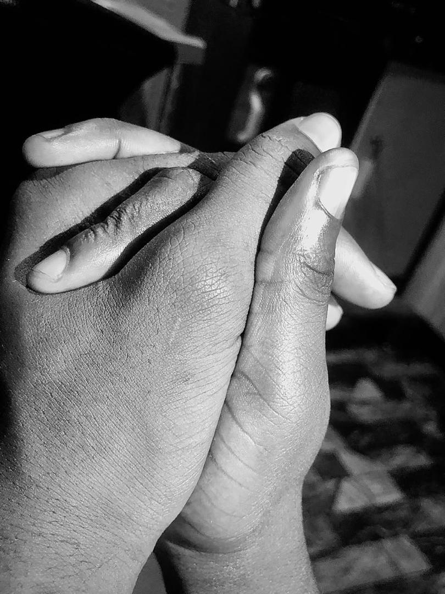
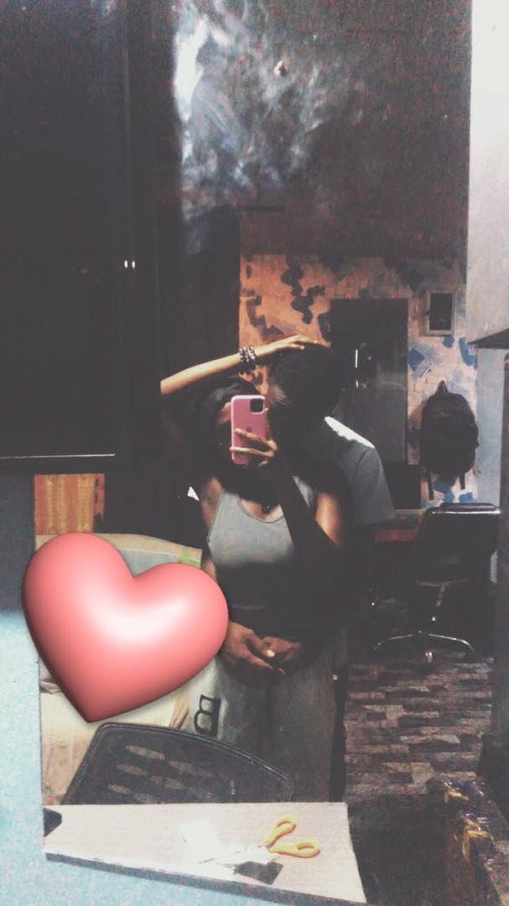

The Hug That Changed Everything
I never imagined that someone I would eventually call my favourite person would come into my life the way you did.
At first, we were just two people who happened to cross paths. Life had its own plans, and somehow, even when things didn't go as expected, you remained.
Then came those days at 37 Military Hospital. You were there, staying close to your mum, and somewhere in the middle of everything happening, we found ourselves talking more.
One day, you asked me to come see you. I still remember that moment. The moment you saw me, you came over and hugged me.
Maybe to you, it was just a hug. But to me, it felt like something I had never experienced before. There was a warmth in that moment that words couldn't explain. For a little while, everything else seemed to disappear.
And somewhere in that moment, I realised that what I felt for you was becoming something special.
When we returned to school, our closeness grew. The conversations became more meaningful, the bond became stronger, and without even realising it, you were becoming someone I couldn't imagine overlooking.
Then came November 20, 2025. I gathered the courage to ask you to be mine officially. It wasn't a grand stage or a dramatic moment. Just a message, sent with feelings that were much bigger than the words on the screen.
And that was how our story officially began.
And Then You Said Yes
And then, there was your yes.
A simple message, a question filled with feelings, and a reply that would forever become part of my favourite memories.
And just like that, something that had been quietly growing between us finally had a name. We became something more than two people who enjoyed each other's company. We became two people choosing to give this connection a chance.
Life at school continued as usual. There were no grand celebrations or extraordinary moments every day. We simply kept seeing each other, sharing little moments, talking, laughing and finding comfort in knowing we had each other.
But perhaps that's what made those days beautiful. We didn't need every moment to be extraordinary. Having you around was already something special.
The Little Things I Miss
If someone asked me what I miss most about our school days, I wouldn't know where to begin.
Maybe I'd start with those little belt arguments. The days you'd forget or refuse to tie your belt, and I'd insist that you did. You probably thought I was being difficult, but those little moments became part of our own language.
Or perhaps I'd talk about how you'd walk all the way from the girls' side to the juniors' block just to see me. Even coming to my classroom wasn't too much for you.
And then came our little arguments: Who was supposed to visit whose classroom?
Neither of us wanted to lose that argument. Looking back, I think we both just wanted an excuse to see each other.
But then came the day you had to leave school because of the suspension. That day felt different.
The thought of not seeing you around, not having those little moments and not knowing when things would feel normal again weighed heavily on me. I wanted to let my emotions out, but I knew I also had to be strong for you.
So I tried to be strong, because I knew you needed strength too.
Some memories make us smile. Others remind us just how much someone means to us.
The Little Things That Made Me Fall
They say every relationship has a beautiful beginning. But I honestly believe mine had the nicest.
There were so many little things about you that made you special to me. I admired how you wanted to do things on your own, how you stood for what you believed in, and how you weren't afraid to tell me when something wasn't right.
I loved that you could call me and say, "Babe, what you're doing isn't good. I don't like it." You didn't just keep quiet about things; you cared enough to let me know.
And those little reminders!
Sometimes, when I forgot to tell you I loved you, you'd call and say, "Hey, you didn't tell me you love me."
How could I forget that?
I loved our gossip sessions, too. You always had something to say, even on days when I barely had words. Somehow, you could keep a conversation going, and I could just listen to you talk.
You brought a certain kind of life into my ordinary days.
But I know things haven't remained the same. We've had arguments, misunderstandings and moments that have changed the way we relate to each other.
I won't put all the blame on you. I know there were times when you gave more than I did. I know my effort was small in moments when I could have done better. And perhaps, with time, some of that changed how you felt and how much you were willing to give.
I can feel the distance now. Sometimes, it feels like you've drawn back a little, and honestly, I miss the version of us that used to feel so close.
But I don't want this chapter to become a list of complaints.
I want you to remember that I noticed those little things. Your calls. Your corrections. Your reminders. Your endless stories. Your determination.
And even though some things have changed, I will never pretend that the beautiful parts of us didn't happen.
Our Favourite Memories
Some moments deserve to be kept forever.


Our Little Soundtrack
Some songs remind us of certain people. This one is here because I know you love it. So, let's make it part of our little universe.
Ayox — Need You to Stay
If You Could Read My Heart
There are so many things I wish I could put into words, but sometimes words never seem enough.
If I could take you back to the beginning, I'd show you that hug at 37 Military Hospital. I'd show you the little classroom visits, our silly arguments about whose class to visit, your random calls, our gossip sessions and those little moments that probably seemed ordinary at the time.
I'd show you the girl who would call just to remind me that I hadn't said I loved her.
And perhaps then you'd understand why those memories mean so much to me.
I wouldn't say everything has been perfect. We've had our arguments, misunderstandings and even moments that brought us close to walking away from each other.
I know there were times I exaggerated certain things or complained more than I should have. Sometimes, it was because I wanted the best for you and for us. I wanted to see us grow, I wanted things to work, and honestly, I didn't want to lose what we had. But I understand that even when intentions are good, the way we express ourselves matters.
I'm not saying this to justify every argument or put the blame on you. I know I have things to learn, too.
One thing I truly wish for us is that, no matter what disagreement comes our way, we never forget to choose each other through understanding, honesty and communication.
Let's learn to listen before reacting, understand before assuming, and communicate instead of allowing silence or misunderstandings to create distance between us.
I don't expect us to be perfect. I just believe that two people who genuinely value each other should always be willing to communicate and understand one another.
I know things aren't exactly how they used to be. We've had our difficult moments, and I know I haven't always given the effort I should have. I'm not writing this to blame you or pretend that everything is perfect.
I'm writing because I don't want the difficult chapters to erase the beautiful beginning.
Thank you for the laughter, the conversations, the memories and the little ways you made ordinary days special.
If there's one thing I hope you take away from this little universe I've created, it's that you were never just another person in my life. You became a beautiful part of my story.
And no matter how much time passes, I'll always be grateful that our paths crossed.
Happy Anniversary to us. ❤️
Here's to the memories we've made, the lessons we've learnt and whatever beautiful pages life still has waiting for us.
One More Chapter
We've made memories, shared laughter, had disagreements, and grown in ways we never expected.
If our story has taught me anything, it's that the most beautiful things aren't always perfect. Sometimes, they're simply worth appreciating.
Thank you for being part of my story.
Happy 1st Anniversary, my love. ❤️
Our story. Our memories. Our little universe.